COMO A TECNOLOGIA TEM INFLUENCIADO NA VIDA DAS PESSOAS COM DEFICIÊNCIAS - PCD
A acessibilidade para pessoas com baixa visão é um tema muito importante no contexto educacional, pois está diretamente ligada ao direito à educação e à inclusão escolar. Estudantes com baixa visão enfrentam diversas dificuldades no ambiente escolar, principalmente quando não existem adaptações adequadas nos materiais didáticos, na estrutura física da escola e nas práticas de ensino. Dessa forma, garantir acessibilidade significa oferecer condições para que esses alunos possam aprender, participar das atividades e permanecer na escola com qualidade.
Apesar dos avanços na inclusão de estudantes com deficiência nas instituições de ensino, ainda existem muitos desafios que dificultam a vivência escolar de alunos com baixa visão. A falta de recursos acessíveis, como materiais ampliados, tecnologias assistivas e metodologias adequadas, pode prejudicar o processo de aprendizagem e desmotivar o estudante. Além disso, a ausência de preparo da escola e dos profissionais da educação pode reforçar barreiras que vão além das limitações visuais.
Nesse sentido, a acessibilidade não deve ser vista apenas como adaptação física, mas também como uma prática pedagógica inclusiva. É fundamental que a escola esteja preparada para atender às necessidades dos estudantes com baixa visão, promovendo um ambiente acolhedor, respeitoso e que valorize as diferenças. A inclusão acontece quando todos têm oportunidades iguais de aprendizado e participação.
Diante disso, este trabalho tem como objetivo discutir a importância da acessibilidade para pessoas com baixa visão no ambiente escolar, destacando como ela influencia a inclusão e a permanência dos estudantes na escola. Assim, busca-se refletir sobre a necessidade de uma educação mais justa, inclusiva e acessível para todos.
A tecnologia tem exercido um papel fundamental na promoção da inclusão e na melhoria da qualidade de vida das pessoas com deficiência. Quando desenvolvida com foco na acessibilidade, ela possibilita mais autonomia, participação social e acesso à informação, reduzindo barreiras que antes dificultavam a interação com sistemas e serviços digitais.
A acessibilidade, acima de tudo, é um direito que garante igualdade de oportunidades, respeito às diferenças e dignidade para todos. No ambiente digital, isso significa criar ferramentas que possam ser utilizadas por qualquer pessoa, independentemente de suas limitações visuais, físicas ou cognitivas.Nesse contexto, este site foi desenvolvido com o objetivo de demonstrar como a tecnologia pode ser uma aliada da inclusão.
Como parte dessa proposta, é apresentado um manual de acessibilidade do SUAP, voltado especialmente para pessoas com baixa visão, oferecendo orientações práticas para facilitar a navegação, melhorar a leitura e tornar o uso do sistema mais acessível e eficiente.
BAIXA VISÃO
MANUAL

 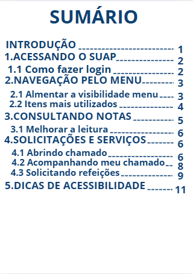
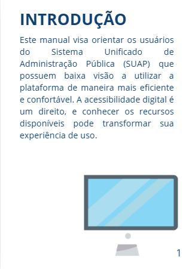
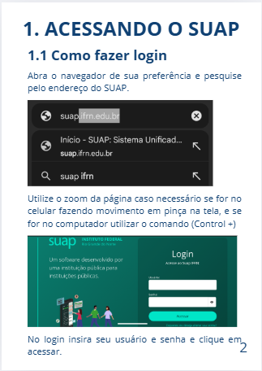
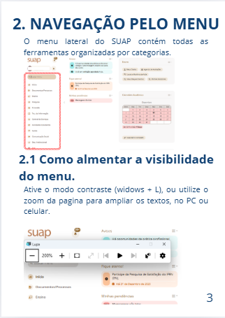
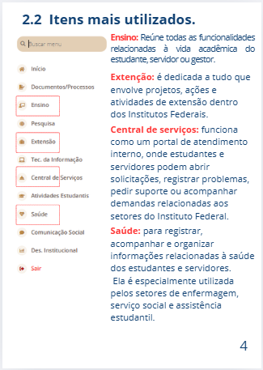
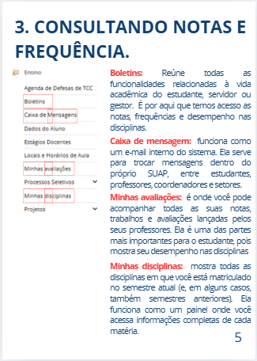
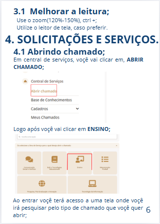
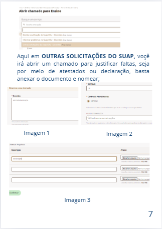
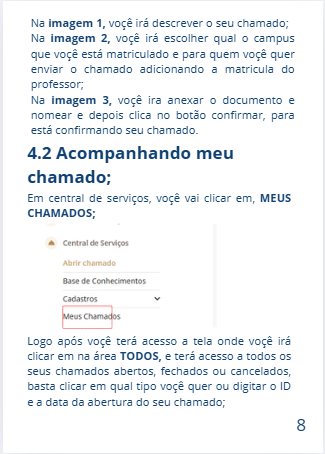
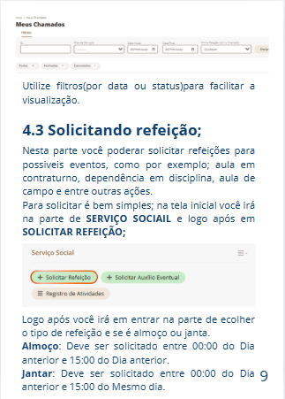
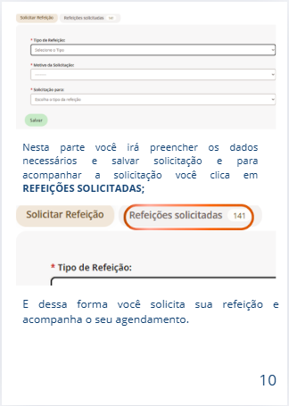
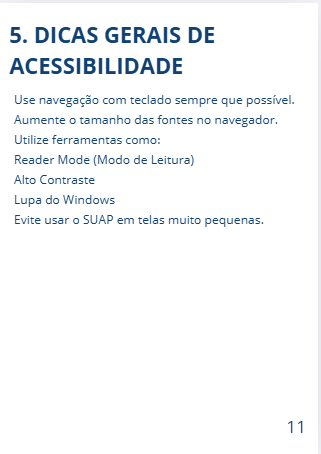
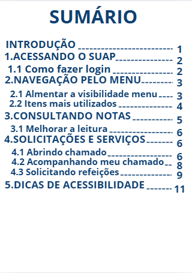
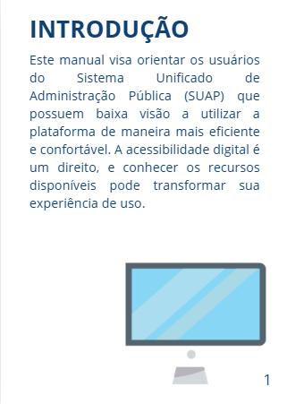
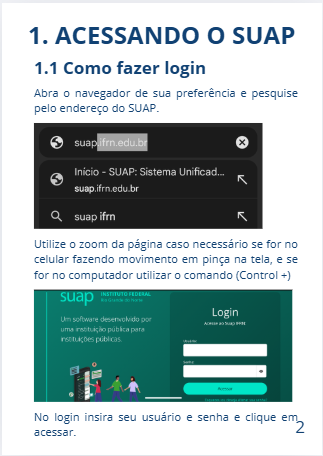
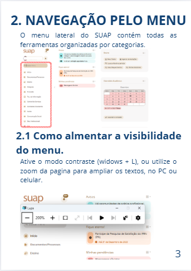
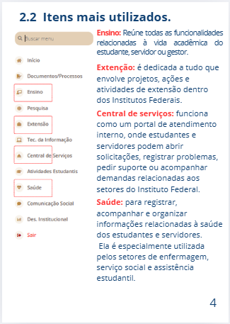
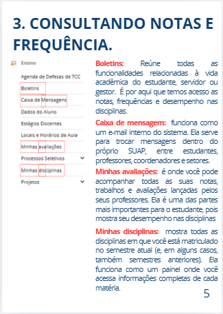
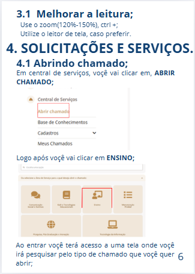
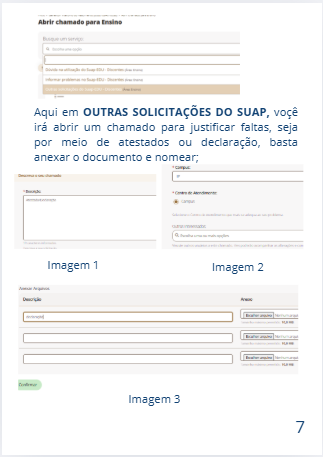
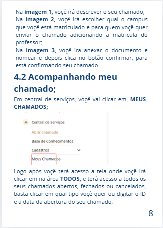
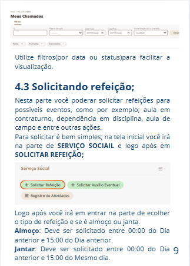
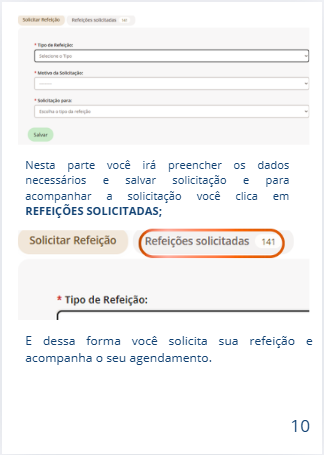
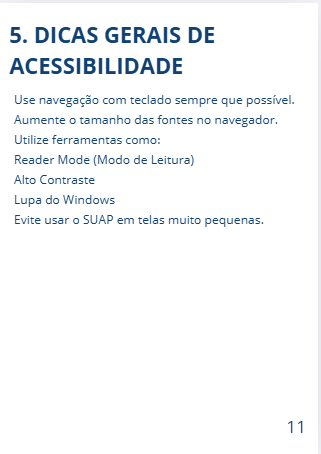